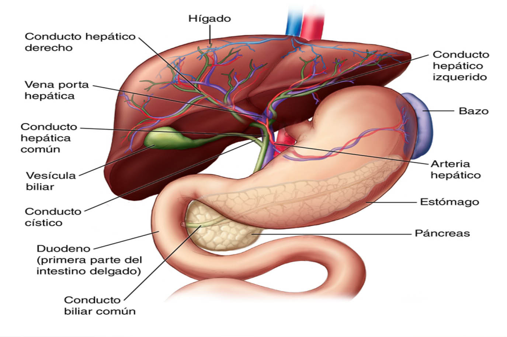

| Home | El hígado es un órgano vital ubicado en el abdomen que desempeña varias funciones esenciales en el cuerpo humano. Actúa como un filtro, procesando los nutrientes absorbidos por el sistema digestivo, eliminando toxinas y desechos, almacenando energía en forma de glucógeno y produciendo sustancias necesarias para la coagulación sanguínea, el metabolismo de los lípidos y la desintoxicación del organismo. Además, es responsable de la producción y regulación de diversas proteínas necesarias para el funcionamiento adecuado del cuerpo. |
| Características del órgano para transplantes | |
|  | Un trasplante de hígado es un procedimiento quirúrgico para extirpar el hígado que ya no funciona de forma adecuada (insuficiencia hepática) y reemplazarlo con un hígado saludable de un donante fallecido o con una parte de un hígado sano de un donante vivo. |
|
|
| Técnica para su fabricación | La ortopedia ha evolucionado mucho y, actualmente, para la fabricación de las prótesis se utilizan diversos materiales (plásticos, metales, siliconas, etc.) y métodos como el escaneo computarizado. También pueden ser realizadas en porcelana o cerámica, composite o de circonio; los implantes en titanio y las carillas en porcelana o composite. |
| Beneficios y propuestas de mejora del órgano para transplante | |||
Beneficios: Las personas que reciben un trasplante de hígado de un donante vivo parecen tener menos problemas médicos después del procedimiento que las que reciben un hígado de un donante fallecido. Además, la tasa de supervivencia del hígado de un donante vivo es más prolongada, Incluso está demostrado que el trasplante de hígado mejora marcadamente la calidad de vida de los pacientes en la etapa final de la enfermedad hepática, tanto en el aspecto psicológico como en el físico. |
Propuestas de mejora: |
||
| Opinión acerca de la fabricación de órganos para transplantes | Opino que realmente es algo que necesitamos y no debería ser temido en absoluto, ya que este ayuda a las personas a progresar como una persona promedio cuando en realidad nacieron con alguna dificultad o la tuvieron por un motivo externo, como un accidente, Incluso esta tecnología nos permite otro tipo de trabajos y nos brinda un ingreso económico |